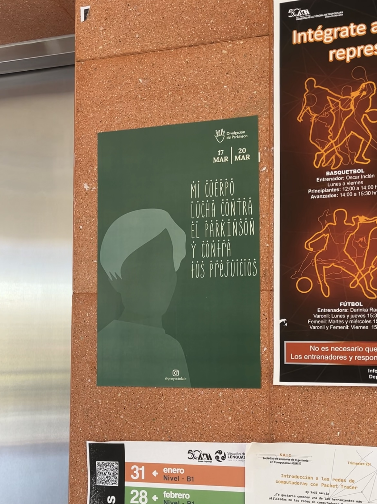
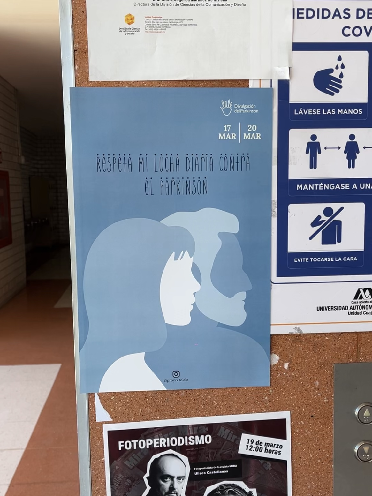
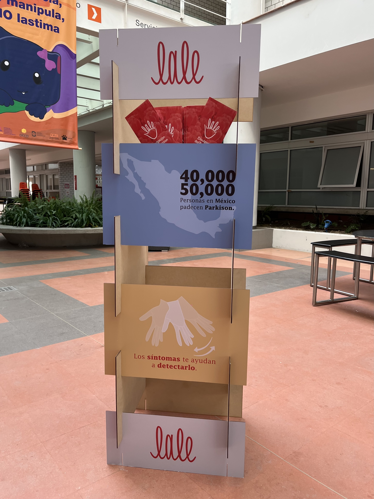
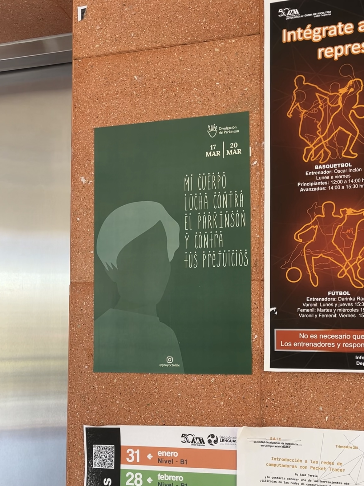
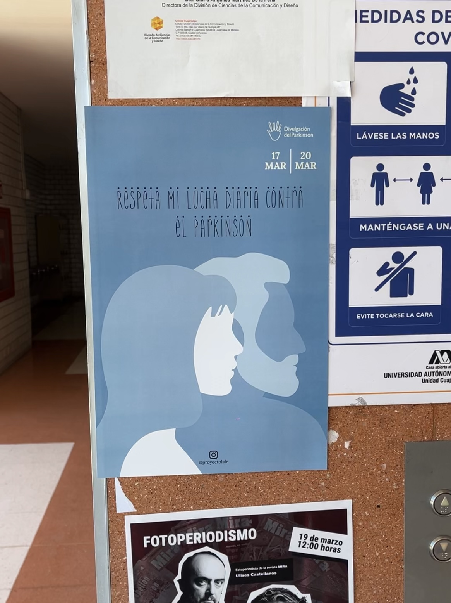
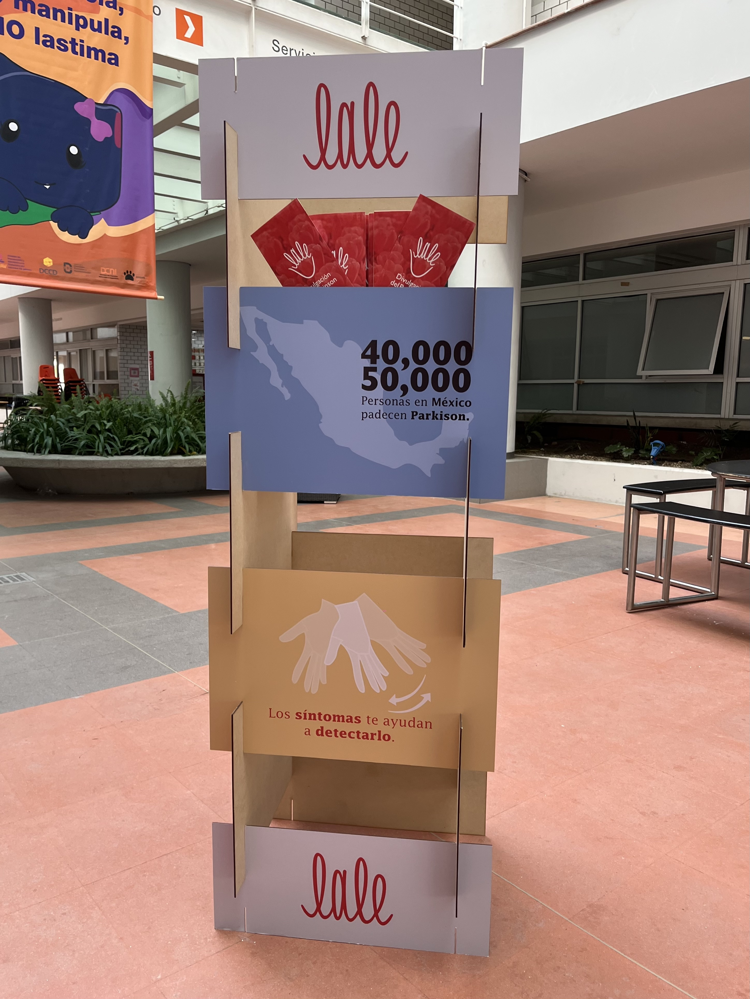

En Lale, nos dedicamos a la divulgación de la Enfermedad
de Parkinson en México, enfocándonos en las etapas
y la importancia de la detección temprana. Nuestro objetivo
es proporcionar información clara y accesible para pacientes, familiares
y cuidadores, a través de materiales educativos y actividades que promuevan el bienestar y la motricidad fina.
Trabajamos para ofrecer apoyo integral, mejorando la calidad de vida de quienes enfrentan esta enfermedad.
Misión
Promover la concienciación, detección temprana y comprensión de la enfermedad de Parkinson en México, mediante la creación
y difusión de materiales informativos accesibles, colaborativos y culturalmente adaptados, que mejoren la calidad de vida
de pacientes en las etapas iniciales (1 a 3), así como la de sus familiares y cuidadores.
Visión
Ser un referente nacional en la difusión e integración de conocimientos sobre el Parkinson, fomentando un entorno inclusivo
y empático que permita a las personas diagnosticadas vivir con dignidad y contar con el apoyo necesario para enfrentar
los retos físicos, emocionales y sociales de la enfermedad.
Tulipan
Símbolo que representa
a la enfermedad, integrado
a la palma de la mano o parte
inferior del isologo.
Mano
Representando la motricidad
fina, como parte de las
afecciones de la EP, dando
la forma general del isologo.
Unión
Comunidad que se crea para
apoyarse y motivarse,
representado por las líneas
contínuas a lo largo del
nombre.


 




